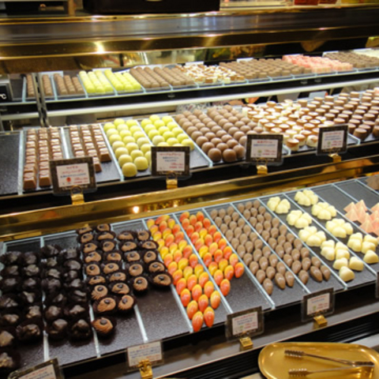

DURIAN MALL
世界のショッピングモールを通じて人と地域
を結ぶお手伝いをしています。
DURIAN MALL
シンガポールの中心街・オーチャードロードに古くからある小規模店舗群を時代の変化に合わせて整備・活性化すべく、2003年に計画が開始され翌2004年にオープンしたのがドリアンモールです。
シンガポールの歴史と融合する新しい時代のランドマークとしての役割を担い、いまや地元の若者たちに大人気のショッピングスポットとなっています。
シンガポール国立蘭園（The National Orchid Garden）で蘭栽培の経験を積んだオーナーが「蘭をもっと身近に」のコンセプトのもとオープンしました。シンガポール北部・クランジの契約農家で育てられた数百種類の蘭は当店ならではの品揃えです。 なかでも人気の商品は、シンガポールの国花である蘭の一種「Vanda Miss Joaquim（バンダ・ミス・ジョアキム）」。現在ご予約を受付中です。お誕生日祝いなどの贈り物もご予算に応じて承りますのでお気軽にご相談ください。

カカオファクトリーでは、「世界チョコレートテイスティング選手権 第２回大会」で優勝した当店のチョコレート・ソムリエが世界各国をたずねて直接買い付けた良質なチョコレートを、お求めやすい価格で皆様にご提供しています。 なかでもおすすめは、シンガポール産シナモンと唐辛子、その他数種類の香辛料をミックスしたスパイシーなチョコレート、「manis pedas（マニスプダス）」です。1日あたりの入荷数に限りがございますので、ぜひお早めにお求めください。